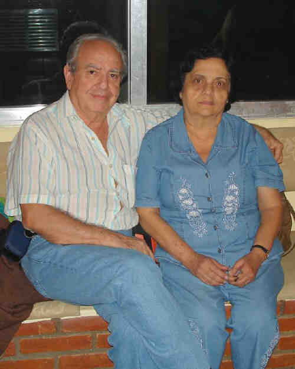
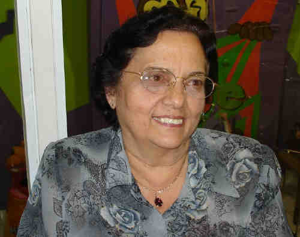
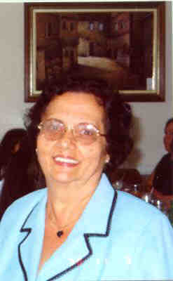

Neuza Colucci
- Nascida em: 20 Nov 1938, Brooklin, Sp
- Casamento: Miguel Paulo Damiani em 2 Dez 1961 em Igreja Do Convento Do Carmo Em Sp

 Notas Gerais: Notas Gerais:
Bem, agora chegou a minha vez. Eu nasci em 20-11-1938, domingo, no Brooklin SP- SP.
Casei na Igreja do Convento do Carmo em SP no dia 02-12-1961 com Miguel Paulo Damiani nascido em 04-04-1936 no Belenzinho - SP-SP ( filho de Michele Damiani nascido em Mondragone - Itália e Julieta Petrucci Damiani nascida em Sabaúna - SP).
A morte prematura de papai "exigiu" que minha irmã mais velha, Maria Helena, contando com apenas onze anos de idade, fosse trabalhar como babá (hoje "baby sitter").
Eu, na época com 8 anos, lembro que, com este emprego, minha irmã se sentiu a "responsável" pela família, tanto assim que, no primeiro Natal, depois da morte do papai, ganhei dela um joguinho de copa para bonecas e junto com ele ouvi o seguinte recado:
-Estou lhe dando este presente porque de agora em diante eu vou ser o seu pai (ela com onze e eu com oito anos)!
Após a morte de meu pai, a minha infância foi muito sacrificada. Foram tempos árduos e aflitivos.
Com onze anos, recebi igualmente a mesma "obrigação" da minha irmã, ou seja, trabalhar para ajudar no orçamento familiar. Neste momento, fechou-se automaticamente, a cortina da minha infância.
Fui trabalhar no período da manhã e, a tarde, fiz um curso de corte e costura que teve a duração de dois anos. Fui tão bem no curso, que depois de terminado, fui convidada a dar aulas para as principiantes.
Com esforço consegui me integrar nas novas funções, e me adaptar à nova vida.
Com 14 anos fui convidada pela proprietária Paula Trappo a gerenciar sua loja de Modas e Lingerie localizada na Av. Joaquim Nabuco. Neste local, permaneci durante quatro anos.
Depois, fui convidada a trabalhar na loja do Ítalo, junto com a Constância. Posteriormente, fui gerenciar a loja que minha irmã montou na Av. Santo Amaro e lá permaneci até casar.
Eventos notáveis em Sua vida foram:

(Clique na Foto para vê-la no Tamanho Original)")
• fotos: Neuza e Miguel casamento.

• fotos: Neuza e Miguel.

(Clique na Foto para vê-la no Tamanho Original)")
• fotos: Miguel-Neuza-Ibsen-Enrico-Cláudia-Patrícia-Andrei-Erik-Abner.

• fotos: Neuza.

• fotos: Neuza.
Neuza casad[:o::a] Miguel Paulo Damiani, filho de Michele Damiani e Julieta Petrucci, em 2 Dez 1961 em Igreja Do Convento Do Carmo Em Sp. (Miguel Paulo Damiani nasceu em em 4 Abr 1936 em Belenzinho - Sp-Sp.)
|